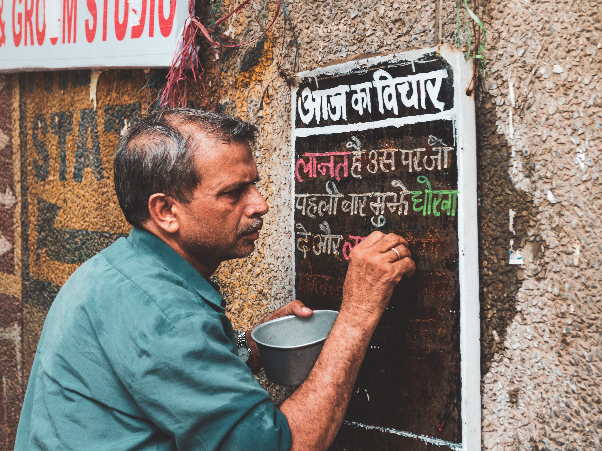

Hindi (Devanāgarī: हिन्दी or हिंदी, Hindī), or more precisely Modern Standard Hindi (Devanagari: मानक हिन्दी Mānak Hindī),is an Indo-Aryan language spoken chiefly in the Hindi Belt region encompassing parts of northern, central, eastern, and western India. Hindi has been described as a standardised and Sanskritised register of the Hindustani language, which itself is based primarily on the Khariboli dialect of Delhi and neighbouring areas of North India. Hindi, written in the Devanagari script, is one of the two official languages of the Government of India, along with English. It is an official language in nine states and three union territories and an additional official language in three other states. Hindi is also one of the 22 scheduled languages of the Republic of India.
Hindi is the lingua franca of the Hindi Belt. It is also spoken, to a lesser extent, in other parts of India (usually in a simplified or pidginised variety such as Bazaar Hindustani or Haflong Hindi). Outside India, several other languages are recognised officially as "Hindi" but do not refer to the Standard Hindi language described here and instead descend from other dialects, such as Awadhi and Bhojpuri. Such languages include Fiji Hindi, which has an official status in Fiji, and Caribbean Hindustani, which is spoken in Trinidad and Tobago, Guyana, and Suriname. Apart from the script and formal vocabulary, standard Hindi is mutually intelligible with standard Urdu, another recognised register of Hindustani as both share a common colloquial base. Hindi is the fourth most-spoken first language in the world, after Mandarin, Spanish and English. If counted together with Urdu, it is the third most-spoken language in the world, after Mandarin and English.
